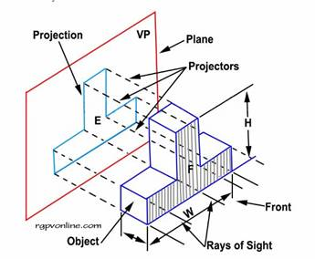
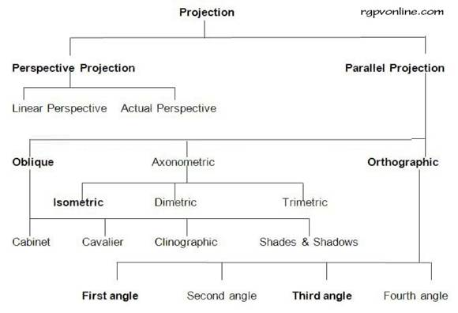

Projection
Engineers are confronted with the task of communicating the design, development and structures of machines to manufacturers and builders. The shape and size of various parts of a machine and its structure must be recorded on plane sheets in a systematic way for communication. The pictorial view of the object does not carry all the details, especially the inner details and correct shape of complicated parts. Different methods, therefore, are implied for describing the exact shape based on the ‘projectors' drawn by engineers.
Principle of Projection
If straight lines are drawn from various points on the contour of an object to meet a plane, the object is said to be projected on that plane. The figure formed by joining, in correct sequence, the points at which these lines meet the plane, is called the projection of the object. The lines from the object to the plane are called projectors.
Projection on a Single Plane
If straight lines are drawn from the various points on the contour of an object to meet a plane, the figure obtained on the plane is called the Projection of the object. The object is said to be projected on the plane. In other words, we can say that the projection of an object on a plane is the shadow of the object on the plane showing each and every edge line of the object. The imaginary lines drawn from the object to the plane are called projectors or projection lines. The plane on which the projection of the object is taken is called plane of projection. Suppose an object is placed in front of a screen and light thrown on the object (assuming the light rays to be parallel to each other and perpendicular to the screen) then a true shadow of the object is obtained on the screen. This shadow is the projection on the object on the plane of screen showing the contour line of the object.

Projection on a Single Plane
Types of Projections
The projections are classified according to the method of taking the projection on the plane. A classification of projection is shown below:

Types of Projections
Factors on Which Type of Projection Depends
Different views of an object can be drawn by projections. Thus every drawing of an object will have four things on which projection depends
Object,
Projectors,
Plane of projection, and
Observer's eye or station point.
Methods of Projection
In engineering drawing following four methods of projection are commonly used, these are:
· Isometric projection
· Oblique projection
· Perspective projection
· Orthographic projection
The above method represents the object by a pictorial view as an observer sees it. In these methods of projection a three dimensional object is represented on a projection plane by one view only. While in the orthographic projection an object is represented by two or three views on the mutual perpendicular projection planes. Each projection view represents two dimensions of an object. For the complete description of the three dimensional object, at least two or three views are required. Orthographic projection comes under the category of ‘Non-Pictorial Drawing'.